Überblick
Overview
01 — 03Von leerer Szene bis zum Ordner, den jemand doppelklickt.
From an empty scene to a folder somebody double-clicks.
Fitzel ist kein Renderer-Demo und kein Framework, das erst ein Spiel drumherum braucht. Ein Rennspiel, ein Auto, ein Gleiter, ein HUD, Gegner und eine Bestenliste sind da — bevor die erste Zeile eigener Code geschrieben ist.
Geschrieben in modernem C++20 gegen OpenGL 3.3 core. Jede Abhängigkeit wird beim Konfigurieren geholt, nichts wird systemweit installiert und nichts liegt kopiert im Repo. Der Editor ist C++, das Spielverhalten ist Lua — diese Trennung ist Absicht: ein kaputtes Skript darf niemals eine Editor-Sitzung mit sich reißen.
Fitzel is not a renderer demo, and not a framework that still needs a game written around it. A race sim, a car, a glider, a HUD, opponents and a leaderboard are already there — before the first line of your own code.
Written in modern C++20 against OpenGL 3.3 core. Every dependency is fetched at configure time, nothing is installed system-wide and nothing is copied into the repo. The editor is C++, gameplay behaviour is Lua — deliberately so: a broken script must never be able to take an editing session with it.
Bauen
Build
Terrain, Straßen, Häuser, Props, Licht, Skripte. Gestreamtes Endlos-Terrain, Straßen als Splines, Stadt aus Biom-Regeln.
Terrain, roads, buildings, props, lights, scripts. Streamed infinite terrain, roads as splines, districts from biome rules.
Play
Play
Frische Lua-VM bei jedem Start. Szene und Materialbibliothek werden vorher kopiert und beim Stoppen zurückgestellt — Play kann die Arbeit nicht kaputt machen.
A fresh Lua VM every time. Scene and material library are copied first and restored on stop — Play cannot damage the work.
Exportieren
Export
Ein Ordner, der läuft: player.exe unter dem eigenen Namen, eigenes Icon im Exe, verschlüsseltes game.fpak, fertiger Installer.
A folder that runs: player.exe under the game's own name, its icon written into the exe, an encrypted game.fpak, and an installer.
Welt
World
Die Straße wird gezogen. Alles andere folgt ihr.
You draw the road. Everything else follows it.
Straßen sind Splines über gestreamtem prozeduralem Terrain. Brücken, Tunnel, Loopings, Bordsteine und Leitplanken werden aus diesen Splines abgeleitet, nicht von Hand gesetzt — und ein Bezirks-Generator füllt die Seiten mit Häusern, die der Fahrbahn aus dem Weg gehen. Wer die Kurve verschiebt, verschiebt die Leitplanke mit.
Das Terrain darunter ist unendlich und nahtlos: Chunks entstehen aus Weltraum-Noise, also passen Nachbarn ohne Naht zusammen. Erzeugt wird auf einem Worker-Pool, hochgeladen werden ein paar fertige Chunks pro Frame — eine Chunk-Grenze zu überqueren hält das Bild nie an.
Roads are splines laid across streamed procedural terrain. Bridges, tunnels, loops, kerbs and guard rails are derived from those splines rather than placed by hand — and a district generator fills the sides with buildings that keep out of the road. Move the curve and the guard rail moves with it.
The terrain underneath is infinite and seamless: chunks are generated from world-space noise, so neighbours tile without a seam. Generation runs on a worker-thread pool and the render thread uploads a few finished chunks per frame — crossing a chunk border never stalls the frame.
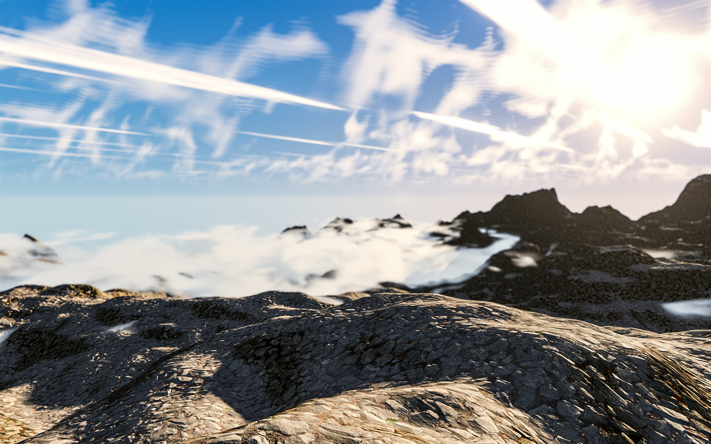
lit.frag, die Sonne eine HDR-Radiance — deshalb blüht sie, statt zu clippen.lit.frag; the sun is an HDR radiance, which is why it blooms instead of clipping.- Skulptieren statt neu würfelnSculpt, don't reroll Anheben, senken, glätten, planieren, thermische Erosion, Landform-Stempel (Kuppe, Kegel, Mesa, Krater, Grat, Gebirgszug) und Täler ziehen — als dünne Weltraum-Ebene über dem Noise. Raise, lower, smooth, flatten, thermal erosion, landform stamps (dome, cone, mesa, crater, ridge, mountain range) and dragged valleys — a sparse world-space layer on top of the noise.
- Presets und Regler mit PreviewPresets and knobs with a preview Hügelland, Alpin, Canyon, Mesa, Archipel, Fjorde — dazu Talschnitt, Gipfelschärfe, Reliefüberhöhung, mit Live-Vorschau beim Loslassen des Reglers. Rolling hills, alpine, canyon, mesa, archipelago, fjords — plus valley carving, peak sharpness and relief exaggeration, with a live preview that rebuilds on slider release.
- Pinsel auf dem BodenA brush on the ground Terrain-Layer von Hand malen, als Vertex-Gewichte gespeichert; sie überschreiben die Höhen/Neigungs-Regel genau dort, wo gemalt wurde. Hand-paint the terrain layers, stored as per-vertex weights that override the height/slope rule exactly where painted.
- Flüsse, Bäche, WasserfälleRivers, streams, waterfalls Aus Splines abgeleitet — das System entscheidet die Höhe, gelöst gegen den Boden; Fälle sind eine Wurfparabel. Derived from splines — the system decides the height, solved against the ground; falls are a projectile arc.
- Zäune, Mauern, GleiseFences, walls, rails Dieselbe Kurve, andere Regel: abgeleitete Spline-Geometrie ohne Build-Schritt. Same curve, a different rule: derived spline geometry with no build step.
- Vegetation auf der GPUVegetation on the GPU Gras und Bäume als Tile-gestreutes Instancing, das mit dem Streaming-Radius mitwandert. Grass and trees as tile-streamed instanced scatter that follows the streaming radius.
Editor
Editor
Nichts Wichtiges darf eine ruhige Hand verlangen.
Nothing important may require a steady hand.
Diese Regel schlägt Konvention. Jeder Wert, den man ziehen kann, lässt sich auch anklicken und tippen. Ein Klick, der ein bisschen verrutscht, bleibt ein Klick und wird nicht zum Beginn eines Ziehens. Panels bewegen sich nur an ihrer Titelleiste. Das Doppelklick-Fenster ist zeitlich und räumlich großzügiger als üblich.
Nichts davon ist ein Modus. Es gibt nichts einzuschalten, keinen zweiten Arbeitsablauf zu lernen und keine Gewohnheit aus einem anderen Editor, die plötzlich nicht mehr funktioniert — die Schwellwerte um die ganz normalen Widgets sind schlicht weiter gesetzt. Und wo ein Werkzeug nur um präzises Ziehen herum baubar wäre, bekommt es stattdessen einen getippten oder gerasteten Weg. Wenn diese Regel und Konvention sich streiten, gewinnt die Regel.
This rule outranks convention. Every value that can be dragged can also be clicked and typed. A click that drifts a little is still a click rather than the start of a drag. Panels move only by their title bar. The double-click window is wider and more forgiving in position than standard.
None of it is a mode. There is nothing to switch on, no second workflow to learn and no habit from another editor that stops working — the thresholds around the ordinary widgets are simply set wider. And where a tool could only be built around precise dragging, it gets a typed or stepped path instead. When that constraint and convention disagree, the constraint wins.
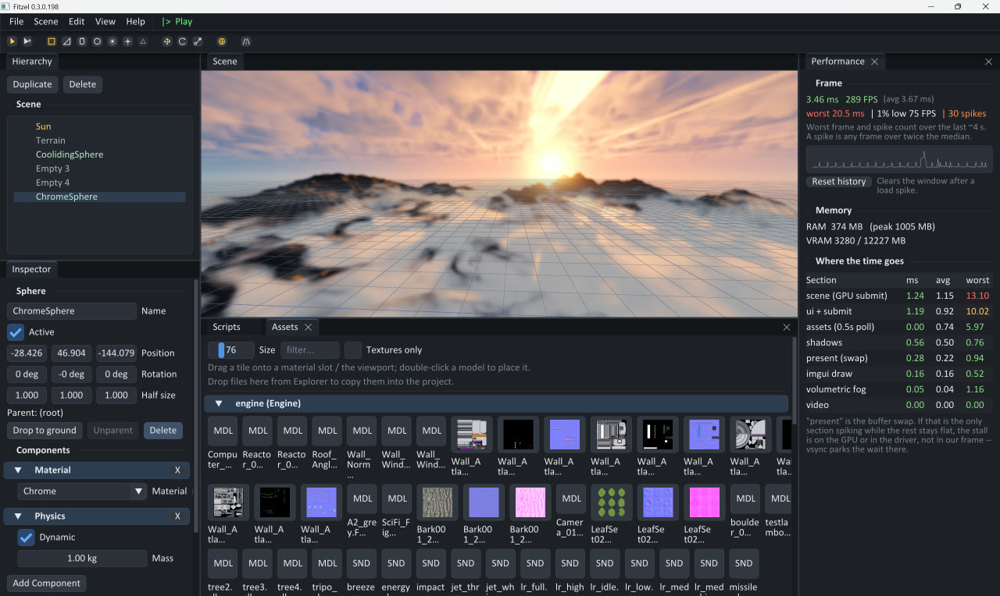
Bild
Picture
Ein Vorwärts-Renderer, der aussieht wie ein gedrehter Film.
A forward renderer that reads like footage.
Die Szene rendert linear in einen HDR-Puffer. Ein Composite-Pass legt Bloom, God Rays (radialer March von der Bildschirmposition der Sonne) und eine analytische Lens Flare darauf, dann ACES-Tonemapping, Belichtung und Gamma. Autorenfarben werden bei Benutzung linearisiert, die Sonne ist eine echte HDR-Radiance — deshalb liest sie sich als Sonne.
The scene renders linear into an HDR buffer. A composite pass adds bloom, god rays (a radial march from the sun's screen position) and an analytic lens flare, then applies ACES filmic tonemapping, exposure and gamma. Authored colours are linearised on use and the sun is a real HDR radiance — which is why it reads as a sun.
- Cascaded Shadow Maps Vier Tiefenbereiche in ein 2048²-Depth-Array, Kaskadenwahl nach View-Tiefe, 3×3 PCF mit neigungsskaliertem Bias. Four depth ranges into a 2048² depth array, cascade picked by view depth, 3×3 PCF with slope-scaled bias.
- Wasser mit Spiegelung und BrechungWater: reflection and refraction Zwei Offscreen-Pässe mit Clip-Plane, Schlick-Fresnel, tiefengetönte Brechung, Gerstner-Wellen, Schaum am Ufer. Two off-screen passes with a clip plane, Schlick Fresnel, depth-tinted refraction, Gerstner waves and foam at the shore.
- Volumetrische WolkenVolumetric clouds Raymarch durch eine Wolkenplatte mit 3D-Value-Noise, Licht-March zur Sonne für Selbstverschattung, Henyey-Greenstein-Phase für den Silberrand. A raymarched cloud slab with 3D value-noise density, a secondary light march to the sun for self-shadowing and a Henyey-Greenstein phase for the silver lining.
- Ambient in drei StufenAmbient in three tiers Gebackenes Probe-Gitter, sonst HDRI-Irradiance-Faltung, sonst eine flache Farbe. Das Spezifischste gewinnt. A baked probe grid, else an HDRI irradiance convolution, else one flat colour. Most specific wins.
- SSAO Halbaufgelöst aus der Tiefe rekonstruiert — fängt die feinen Falten, für die das Probe-Gitter zu grob ist. Half-res, reconstructed from depth — it catches the fine creases the probe grid is too coarse for.
- Frustum-Culling pro PassPer-pass frustum culling Jeder Pass zieht seine eigenen sechs Ebenen (Gribb-Hartmann); das Panel meldet sichtbar gegen gecullt. Each pass extracts its own six planes (Gribb-Hartmann); the panel reports visible versus culled.
Ein Wert, an dem alles hängt
One value everything hangs from
weather läuft von 0 (klar) bis 1 (Sturm) und zieht alles mit: Wolkendeckung, -dichte, -höhe und Wind, Sonnen- und Ambient-Dämpfung, Nebeldichte, Gerstner-Wellenhöhe, Blitze, Regen — und die Audio-Schichten, deren Lautstärken sich überblenden, mit einem Donner-One-Shot auf jedem Blitz. Zieh unten am Regler; die Skizze rechnet dieselbe Idee im Browser nach.
weather runs from 0 (clear) to 1 (storm) and ties everything together: cloud coverage, density, altitude and wind, sun and ambient dimming, fog density, Gerstner wave height, lightning, rain — and the audio layers, whose volumes cross-fade, with a thunder one-shot on every flash. Drag the slider below; the sketch runs the same idea in the browser.
Eine Skizze im Browser, nicht die Engine — aber genau die Kopplung, die im Editor an einem Regler hängt. A browser sketch, not the engine — but exactly the coupling that hangs off one slider in the editor.
Volumetrischer Nebel: der, der eine Form hat
Volumetric fog: the kind that has a shape
Höhennebel ist eine geschlossene Formel: billig, global, ohne Struktur — alles in gleicher Entfernung bekommt gleich viel, nichts kann nebliger sein als sein Nachbar, und die Sonne lässt sich auf dem Weg hinein nicht verdecken. Volumetrischer Nebel ist stattdessen eine Kiste aus teilnehmendem Medium, von vorn nach hinten gegen die Szenentiefe gemarcht, mit Dichte aus einem animierten 3D-Noise-Feld und der Sonne durch dieselben Kaskaden gesampelt, die auch die Oberflächen benutzen. Das kauft zwei Dinge, die die Formel nie haben kann: Struktur und Lichtschächte.
Volumen sind Dinge, die man platziert — eine Komponente auf einer beliebigen Entity, mit dem Gizmo skaliert. Sie akkumulieren von hinten nach vorn in einen Puffer, damit zwei überlappende Bänke wie ein Körper Luft aussehen und nicht wie das zuletzt gezeichnete.
Height fog is a closed form: cheap, global, and with no shape — everything at the same distance gets the same amount, nothing can be foggier than its neighbour, and the sun cannot be blocked on the way in. Volumetric fog is instead a box of participating medium, marched front to back against the scene depth, with its density from an animated 3D noise field and the sun sampled through the same cascades the surfaces use. That buys two things the closed form never can: structure and shafts.
Volumes are things you place — a component on any entity, scaled with the gizmo. They accumulate back to front into one buffer, so two overlapping banks read as one body of air rather than as whichever was drawn last.
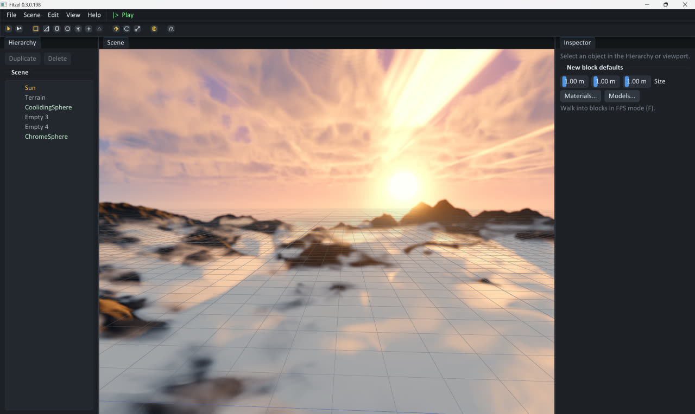
Zwei Regler sind nicht das Offensichtliche. Vertikale Detailschärfe staucht den Noise-Lookup in der Höhe: das Feld ist in Weltmetern adressiert und isotrop, also ist ein Merkmal hundert Meter groß auf jeder Achse — eine vierzig Meter dicke Bodenschicht spannt seitlich zwei Dutzend Merkmale und vertikal kein halbes, und liest sich als flaches, nach oben gezogenes Muster. Höhenabfall hebt die Deckungs-Schwelle mit der Höhe an, statt die Dichte zu skalieren: skaliert wäre der Deckel eine analytische Fläche, identisch über Bank und Loch; als Schwelle ist er eine Kontur des Noise — ausgefranst, und über einer Bank höher als über einem Loch.
Two knobs are not the obvious thing. Vertical detail squashes the noise lookup vertically: the field is addressed in world metres and is isotropic, so one feature is a hundred metres across on every axis — a forty-metre ground layer then spans two dozen features sideways and less than half a feature top to bottom, and reads as a flat pattern pulled upward. Height falloff raises the coverage threshold with height instead of scaling the density down: scaled, the lid of the layer is an analytic surface, identical over a bank and over a hole; as a threshold it is a contour of the noise — ragged, and higher over a bank than over a hole.
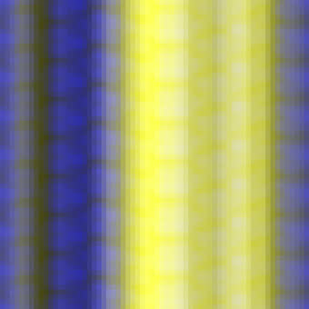
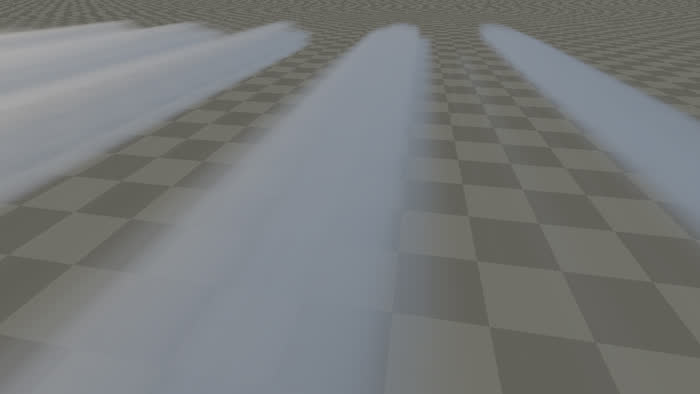
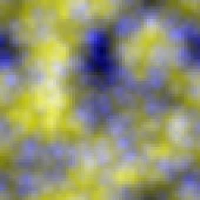
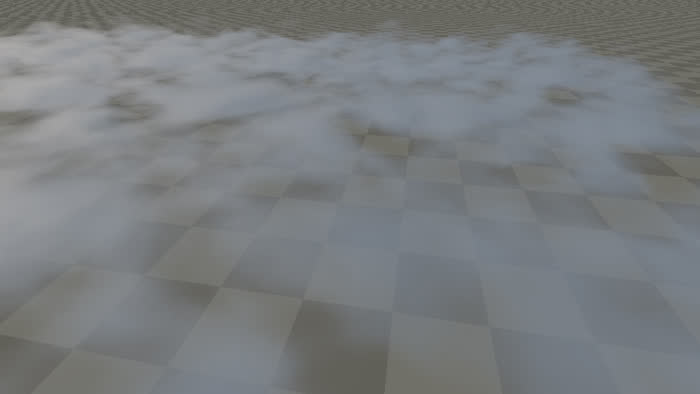
Am Shader stimmte alles: jedes Band, jede Oktave und das Worley-Gitter teilen sich einen Zellen-Hash — und dieser Hash (FNV-1a ohne Finalizer) lawinet nach oben, sodass die zuletzt eingemischte Koordinate nie die unteren Bits erreicht, die hashUnit liest. Das 64³-Volumen war ein extrudiertes 2D-Feld. Ein horizontaler Schnitt hat es in einem Blick gesagt — herausgeschrieben von einem Werkzeug, das nichts prüft, sondern nur zeigt.
From the shader's side nothing disagreed: every band, every octave and the worley lattice share one cell hash — and that hash (FNV-1a with no finalizer) avalanches upward, so whichever coordinate is mixed last never reaches the low bits hashUnit reads. The 64³ volume was a 2D field extruded along one axis. A horizontal slice said so in one look — written out by a tool that tests nothing and only shows.
Offline
Offline
Für das Bild, das man jemandem zeigt.
For the picture you show somebody.
Der Rasterpfad kauft seine Bildrate mit Näherungen, die bei Tempo unsichtbar und im stehenden Bild offensichtlich sind: Spiegelungen aus einem 256-Pixel-Cube von vor ein paar Frames, Ambient als eine flache Farbe, und nichts springt — ein rotes Auto wirft kein Rot auf grauen Asphalt. Ein Screenshot erbt jede einzelne davon, und eine Store-Seite wird minutenlang angeschaut.
Also: View › Presentation › Render. Shot im Viewport einrahmen, Render drücken, und die Szene wird richtig getract — Licht, das springt, Halbschatten mit echter Weichheit, Spiegelungen aus der Geometrie und eine Blende, die sich öffnen lässt, bis der Hintergrund aus dem Fokus fällt. Minuten statt Millisekunden.
The raster path buys its frame rate with approximations that are invisible at speed and obvious in a held image: reflections from a 256-pixel cube captured a few frames ago, ambient as one flat colour, and nothing bounces — a red car on grey tarmac casts no red onto the tarmac. A screenshot inherits every one of them, and a store page is looked at for minutes.
So: View › Presentation › Render. Frame a shot in the viewport, press Render, and the scene is traced properly — light that bounces, shadows with real penumbrae, reflections from the geometry and a lens that can be opened until the background falls out of focus. Minutes rather than milliseconds.
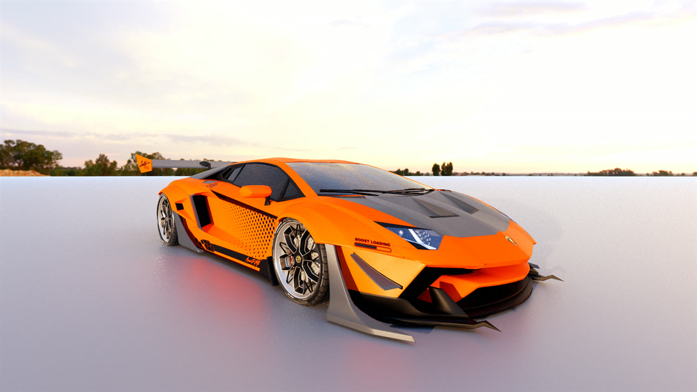
- Die Szene kommt aus der Render-QueueThe scene comes from the render queue
Nicht aus der Szenendatei. Was
Renderer::submiterreicht, ist nur noch Mesh, Material und Ort — Terrain, Straßen, Brücken, Loopings, Decals, Splines, Stadttürme und importierte Modelle erntet ein Stück Code ein, auch Systeme, die es später gab. Not from the scene file. By the time anything reachesRenderer::submitit is just a mesh, a material and a place — so terrain, roads, bridges, loops, decals, splines, city towers and imported models are all harvested by one piece of code, including systems written after it. - Die Sonne hat eine GrößeThe sun has a size Ein Regler, und jede Schattenkante im Bild hört auf, die harte Linie zu sein, die eine Shadow Map zeichnet. Die wirksamste Einstellung dagegen, wie ein Screenshot auszusehen. One slider, and every shadow edge stops being the hard line a shadow map draws. The most effective setting here for not looking like a screenshot.
- Derselbe Grade wie im ViewportThe same grade as the viewport Gleiches Albedo/Roughness, gleiche Lampenabnahme, gleiche ACES-Kurve — und derselbe Farb-Grade. Ein Render liest sich als dieselbe Szene, besser beleuchtet, nicht als ein anderes Spiel. The same albedo/roughness, the same lamp falloff, the same ACES curve — and the same colour grade. A render reads as the same scene, better lit, rather than as a different game.
- Es verfeinert sich beim ZusehenIt refines while you watch
Stop behält, was angekommen ist — „wie viele Samples braucht dieser Shot" hat keine Antwort außer hinsehen. Gespeichert wird ein lineares
.exrneben dem PNG. Stop keeps what has arrived — "how many samples does this shot need" has no answer except watching one. Saving writes a linear.exrbeside the PNG.
Gebackenes Licht: ein Gitter, keine Lightmaps
Baked light: a grid, not lightmaps
Derselbe Tracer füllt ein Gitter aus Sonden über der Welt, jede speichert das, was dort ankommt, als L1-Kugelflächenfunktion. lit.frag schlägt sie nach Weltposition nach und ersetzt damit die flache Ambient-Farbe. Genau die ist das, was ersetzt gehört: ein Wert für jede Fläche der Welt, unter dem das Innere eines Tunnels exakt so hell ist wie ein offenes Feld.
Die Sonne wird bewusst nicht gebacken. Diese Engine läuft einen Tageszyklus — vierundzwanzig Stunden in vier Minuten. Licht mit der Sonne darin gebacken wäre die Fotografie eines Moments, dem das Spiel Sekunden nach Play widerspricht. Was stillhält, ist der Himmel, die statischen Lampen und alles, woran die abprallen.
Und ein Gitter kann etwas, das eine Lightmap strukturell nicht kann: bewegte Objekte nehmen es mit auf. Ein Auto, das unter eine Brücke fährt, wird dunkel — und nimmt die Farbe des Asphalts an, über dem es steht. Gebackenes Licht liegt neben seiner Szene; der ausgelieferte Player leuchtet daraus, ohne eine Zeile des Tracers zu linken, der es gemacht hat.
The same tracer fills a grid of probes over the world, each storing what arrives there as an L1 spherical-harmonic band. lit.frag looks it up by world position and it replaces the flat ambient colour. That colour is the thing worth replacing: one value applied to every surface in the world, under which the inside of a tunnel is exactly as bright as an open field.
The sun is deliberately not baked. This engine runs a day cycle — twenty-four hours in four minutes. Light baked with the sun in it would be a photograph of one moment that the game contradicts within seconds of pressing Play. What holds still is the sky, the static lamps and everything those bounce off.
And a grid does something a lightmap structurally cannot: moving objects pick it up too. A car driving under a bridge goes dark, and takes the colour of the tarmac it is over. Baked light is saved beside its scene, and the shipped player lights from it without linking a line of the tracer that made it.
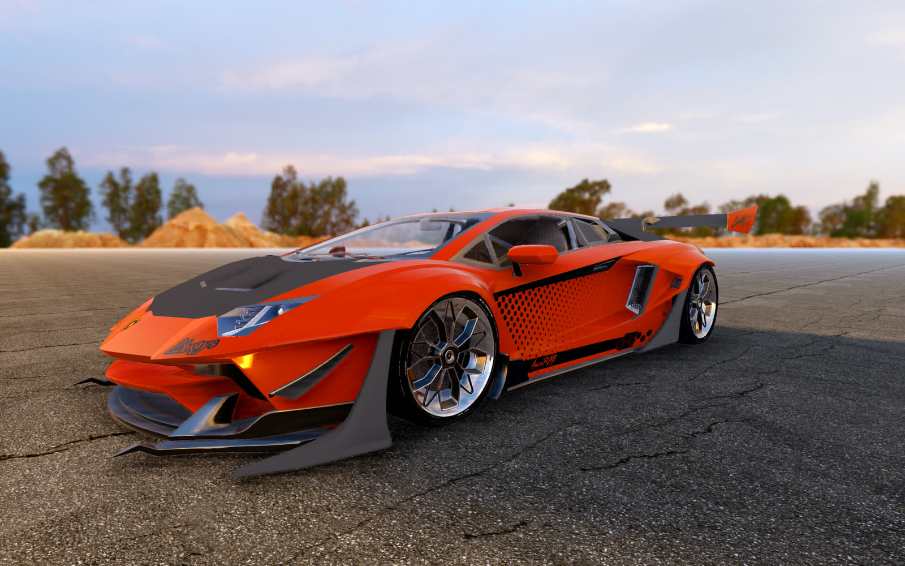
Kamera
Camera
Eine Kamera, die ein Objekt filmt, statt auf ihm zu sitzen.
A camera that shoots an object rather than riding one.
Sie schneidet zwischen den Einstellungen, aus denen eine Autowerbung oder ein Replay gemacht ist: Hero-Dreiviertel, Umlauf, Kranfahrt, Slider, Push-in, Reveal, Dolly-Zoom, Vogelperspektive, Radhöhe, Car-to-Car, Nase, ein Fly-by mit der Kamera in der Fahrbahn, ein Überholer. Rechtsklick auf ein Objekt in der Hierarchie, „Shoot this", und es gibt eine funktionierende Kamera darauf.
Es ist kein Kamerapfad, und darin liegt der Punkt. Ein aufgezeichneter Pfad ist ein Spline aus Welt-Keyframes — richtig für ein festes Motiv und nutzlos für ein Auto: fahr woanders hin, und der ganze Pfad muss neu gebaut werden. Hier ist jede Bewegung relativ zum Motiv formuliert — „dreiviertel von vorn, eine Wagenlänge weg, hereindriftend" — und gilt damit für jedes Objekt, überall, bei jedem Tempo.
It cuts between the moves a car advert or a replay is made of: a hero three-quarter, a turntable orbit, a crane down, a slider past, a push-in, a reveal, a dolly zoom, a bird's eye, a wheel-level pass, car-to-car, a nose shot, a fly-by with the camera planted in the road, an overtake. Right-click an object in the hierarchy, pick "Shoot this", and there is a working camera on it.
It is not a camera path, and the difference is the point. A recorded path is a spline of world keyframes — right for a fixed subject and useless for a car: drive somewhere else and the whole path has to be authored again. Every move here is expressed relative to the subject — "three quarters front, one car length out, drifting in" — so it holds for any object, anywhere, at any speed.
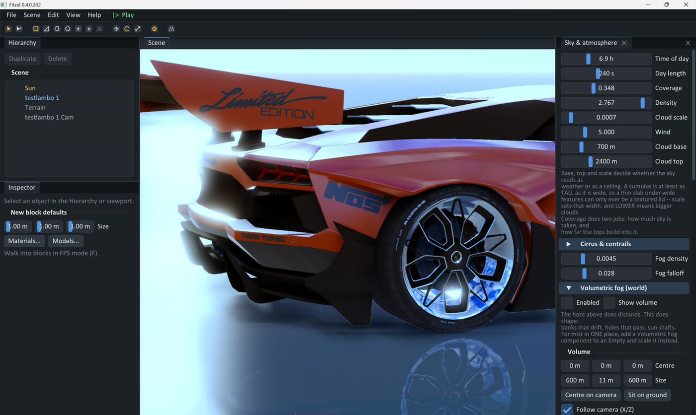
- Jede Distanz ist ein Vielfaches der Bounding BoxEvery distance is a multiple of the bounding box Nie Meter. Dieselben Einstellungen rahmen ein Gokart und einen Sattelzug. Never metres. The same settings frame a go-kart and an articulated lorry.
- Die Shot-Liste folgt dem gemessenen TempoThe shot list follows measured speed Ein Fly-by braucht etwas zum Vorbeifliegen: unterhalb von Schritttempo ist es eine Kamera, die ein geparktes Auto anschaut — also wird er ausgewichtet und die stehenden Moves kommen herein. A fly-by needs something to fly by: below a crawl it is a camera watching a parked car, so it is weighted out and the standing moves come in.
- Das Auge bleibt aus dem BodenThe eye stays out of the ground Jeden Frame gegen das Terrain geprüft. Die Shots nahe am Asphalt sind die guten — und die, die sonst in einem Hügel enden. Checked against the terrain every frame. The shots that live near the tarmac are the good ones, and the ones that would otherwise end up inside a hill.
- Ein Seed ist ein TakeA seed is a take Kein Shot zweimal hintereinander, wechselnde Flanken, variierende Längen — Schnitte auf einem exakten Metronom sind das deutlichste Zeichen, dass eine Sequenz generiert und nicht geschnitten wurde. Derselbe Seed spielt denselben Lauf, also lässt sich nach dem Verschieben einer Lampe nochmal gedreht werden. No shot twice in a row, alternating flanks, varying lengths — cuts landing on an exact metronome are the clearest tell that a sequence was generated rather than cut. The same seed replays the same run, so a sequence can be shot again after moving a light.
Animation
Animation
Alles, was der Inspector zeigt, lässt sich keyframen.
Anything the Inspector shows can be keyframed.
Dafür musste kein einziges Feld angemeldet werden. Jedes Editor-Feld ist ohnehin einmal als Eigenschaft beschrieben — Beschriftung, Art, Zugriff auf das Feld selbst — und das ist bereits eine vollständige Adresse für eine Zahl in der Szene. Eine Spur steht als „Objekt 7, Komponente light, Schlüssel range, Kanal 0" in der Datei und wird beim Abspielen gegen die lebende Szene aufgelöst. Das Animationssystem weiß nicht, was eine Lampe ist — und eine Komponente, die es nächsten Monat gibt, ist an dem Tag animierbar, an dem sie ihre Eigenschaftstabelle bekommt.
Vor jedem animierbaren Feld sitzt eine Raute: hohl, bernstein sobald die Eigenschaft animiert ist, gefüllt wenn genau am Abspielkopf ein Key liegt. Ein Klick nimmt den Wert auf, der ohnehin schon eingestellt ist — das Feld noch einmal in einem anderen Panel suchen zu müssen ist der Schritt, an dem das Animieren aufhört.
No field had to be registered for that to be true. Every editor field is already declared once as a property — a label, a kind, and an accessor to the field itself — which is a complete address for a number in the scene. A track is stored as "entity 7, component light, key range, channel 0" and resolved against the live scene when it plays. The animation system does not know what a light is, and a component added next month is animatable the day it gets its property table.
A diamond sits in front of every animatable field: hollow, amber once the property is animated, filled when a key sits at the playhead. One click records the value already dialled in — having to find the same field again in another panel is the step at which people stop animating anything.
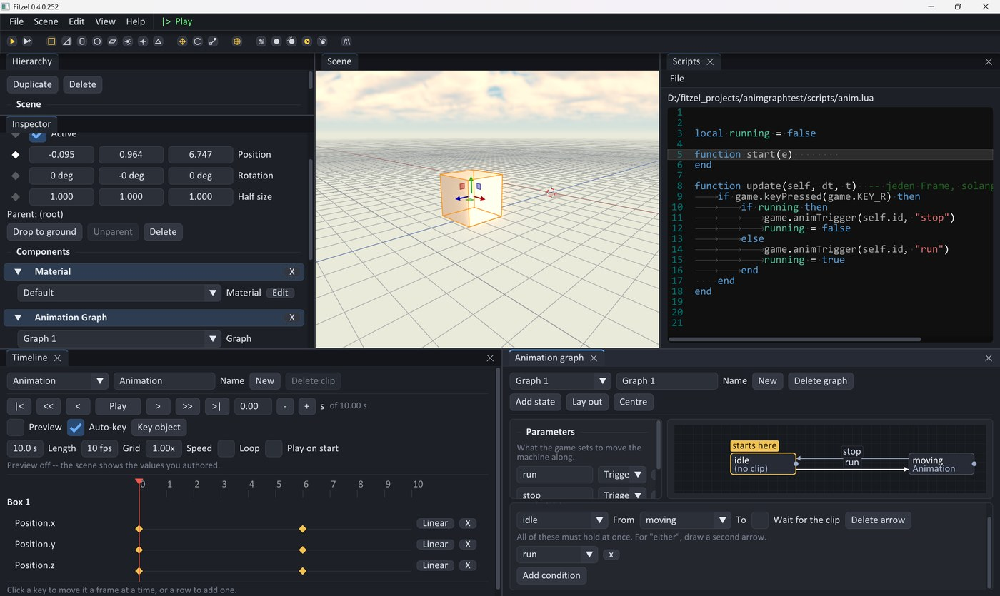
- Zustände, Pfeile, ParameterStates, arrows, parameters Ein Zustand nennt einen Clip, ein Pfeil führt weiter, sobald seine Bedingungen zutreffen. Bedingungen sind UND; „oder" ist ein zweiter Pfeil — und das ist zugleich die Fassung, die man sehen kann. A state names a clip; an arrow leads on when its conditions hold. Conditions are AND — "either" is a second arrow, which is also the version you can see.
- Ein Trigger klingelt einmalA trigger rings once Er bleibt gesetzt, bis der Pfeil ihn liest, der ihn prüft. Ein Skript darf in einem beliebigen Frame feuern, ohne zu wissen, wann die Maschine das nächste Mal schrittet. It stays set until the arrow that tests it is taken, so a script may fire on any frame without knowing when the machine next steps.
- Kein Blending — mit AbsichtNo blending — on purpose Ein Übergang schneidet. Das ist ehrlich und es ist das, was eine Tür, ein Aufzug, eine Lampe und ein Signal wollen; die Entscheidung steht im Header, statt später wiederentdeckt zu werden. A transition cuts. That is honest, and it is what a door, a lift, a lamp and a signal all want; the decision is written in the header rather than left to be rediscovered.
- Jede Geste hat einen Knopf danebenEvery gesture has a button beside it Keys rasten auf ein Raster, der Abspielkopf läuft auf Knopfdruck von Key zu Key, Knoten lassen sich ziehen — oder per „Lay out" ganz ohne Ziehen anordnen. Ein Pfeil entsteht am Port oder aus zwei Auswahllisten. Keys snap to a grid, the playhead steps key to key by button, nodes can be dragged — or arranged by "Lay out" without dragging at all. An arrow is drawn from a port, or made from two dropdowns.
Ein Objekt führt einen Graphen über eine Komponente aus; ein Skript schaltet ihn weiter: game.animTrigger(id, "open"), game.animBool, game.animNumber, game.animState(id). Für den einfachen Fall — ein Clip, der beim Spielstart läuft — gibt es stattdessen eine Animator-Komponente mit drei Feldern und ohne Graph.
An object runs a graph through a component; a script moves it along: game.animTrigger(id, "open"), game.animBool, game.animNumber, game.animState(id). For the simple case — one clip, played when the game starts — there is an Animator component instead: three fields, no graph.
Spiel
Game
Werkzeuge in C++. Verhalten in Lua.
Tools in C++. Behaviour in Lua.
Jede Entity darf ein Skript tragen; beim Start von Play entsteht eine frische Lua-VM, alles lädt neu und start() läuft wieder. Jedes Skript hat seine eigene Umgebung — zwei Objekte mit demselben Skript teilen keinen Zustand. Ein Laufzeitfehler wird einmal gemeldet und deaktiviert nur dieses eine Skript bis zum nächsten Play.
Any entity can carry a script; pressing Play creates a fresh Lua VM, everything reloads and start() runs again. Each script has its own environment — two objects with the same script share no state. A runtime error is reported once and disables only that one script until the next Play.
-- Jede Sekunde einen Fass-Stapel vor dem Spieler fallen lassenDrop a stack of barrels in front of the player once a second local t = 0 function update(dt) t = t + dt if t >= 1.0 then t = 0 local x, y, z = game.cameraPos() game.spawnPrefab("Barrel Stack", x, game.terrainHeight(x, z), z, 90) end end
- Was gebunden istWhat is bound Eingabe, Kamera, Spawn/Destroy, Prefabs, Jolt-Physik (Velocity, Impulse), Audio, Score und HUD, Objekte finden und umhängen, Raycast, Terrainhöhe. Input, camera, spawn/destroy, prefabs, Jolt physics (velocity, impulses), audio, score and HUD, finding and reparenting objects, raycast, terrain height.
- Fest getakteter Arcade-KernA fixed-step arcade core Auto und Gleiter integrieren bei 1/120 s mit Render-Interpolation — Fahrverhalten hängt nicht an der Bildrate. Car and glider integrate at 1/120 s with render interpolation — handling does not depend on frame rate.
- Gleiter statt FlugsimulatorA glider, not a flight sim Der Knüppel fordert eine Gierrate; die Querlage kommt aus der tatsächlich erreichten Rate, nicht umgekehrt. The stick asks for a yaw rate; the bank angle comes out of the rate actually achieved, not the other way round.
- Dazu, ohne dass es geschrieben werden mussIn the box already Rennlogik, Runden und Bestenliste, Verfolgerkamera, Splitscreen, Partikel, Lock-on-Raketen, Gegner-KI, Ladebildschirm. Race logic, laps and a leaderboard, a chase camera, split screen, particles, lock-on missiles, opponent AI, a loading screen.
Prüfen
Checks
Ein Renderer ist das Schlimmste, was man mit dem Auge beurteilen kann.
A renderer is the worst thing to judge by eye.
Jede falsche Antwort produziert trotzdem ein Bild. Ein kaputter Shader kostet still seinen Effekt — der Release-Editor ist /SUBSYSTEM:WINDOWS und hat nirgendwohin, wo er einen Compile-Fehler hinschreiben könnte. Deshalb hat jede dieser Fragen ein eigenes kleines Konsolenprogramm, das sie allein rendert oder misst. Sie werden neben dem Spiel gebaut; keines wird ausgeliefert.
Every wrong answer still produces a picture. A broken shader costs its effect silently — the release editor is /SUBSYSTEM:WINDOWS and has nowhere to print a compile error to. So each of these questions gets its own small console program that renders or measures it on its own. They are built alongside the game; none of them ship.
> check-all.bat --build still, solange sie bestehen — und die Ausgabe des Werkzeugs, wo eines nicht besteht quiet while they pass — and the failing tool's own output where one does not
| WerkzeugTool | Welche Frage es beantwortetWhat it answers |
|---|---|
| shadercheck | Kompiliert noch jeder Shader? Exit-Code ungleich null, wenn nicht.Does every shader still compile? Exits non-zero. |
| viewcheck | Wie sieht die Szene wirklich aus? Lädt ein Projekt und rendert es offscreen in ein PNG — durch denselben Code, durch den der Editor zeichnet.What does the scene actually look like? Loads a project and renders it offscreen to a PNG, through the same code the editor draws with. |
| pathcheck | Rechnet der Pathtracer Licht richtig? Szenen, deren Antwort vorher feststeht — ein weißer Ofen, der bei Radiance 1 zurückkommen muss; ein Schatten, dessen Position Arithmetik ist; Rauschen, das mit 1/√n fallen muss.Does the path tracer compute light correctly? Scenes whose answer is known in advance — a white furnace that must come back at radiance 1, a shadow whose position is arithmetic, noise that must fall as 1/√n. |
| capturecheck | Bekommt der Tracer die Szene, die tatsächlich gezeichnet wurde? Baut sie über die echten Engine-Typen, erntet sie wie das Render-Panel und prüft, wo Vertices landen und wohin Normalen unter nicht-uniformer Skalierung zeigen.Is the tracer handed the scene that was actually drawn? Builds it through the real engine types, harvests it as the Render panel does, and checks where vertices landed and which way normals point under non-uniform scale. |
| shotcheck | Behält die Multishot-Kamera ihr Motiv im Bild und ihr Auge aus dem Boden — über einem geparkten Auto, einem schnellen, einem Lastwagen und einem Hang? Das ist der eine Fehler, den man im Editor nicht sehen kann, weil der Editor das Bild von innerhalb des Fehlers zeigt.Does the multishot camera keep its subject in frame and its eye out of the ground — over a parked car, a fast one, a lorry and a slope? This is the one fault you cannot see in the editor, because the editor shows you the picture from inside the mistake. |
| animcheck · graphcheck | Halten die Keyframe-Spuren den Wert, den sie bekommen haben, und finden sie ihre Eigenschaft nach dem Speichern wieder? Und geht die Zustandsmaschine dahin, wo ihre Pfeile hinzeigen? Beides fällt still aus: eine Spur, die danebengreift, schreibt eine plausible Zahl an eine plausible Stelle, und ein FSM fällt aus, indem es sitzenbleibt — am Bildschirm sieht beides aus wie ein Graph, den niemand fertig gezeichnet hat.Do keyframe tracks hold the value they were given, and find their property again after a save? And does the state machine go where its arrows say? Both fail quietly: a track that resolves wrongly writes a plausible number into a plausible place, and an FSM fails by sitting somewhere — on screen both look like a graph nobody finished drawing. |
| citycheck | Ragt ein generiertes Haus über den Bordstein? Ein Turm über der Straße ist eine Wand, in die man bei Tempo fährt, auf einem Abschnitt, der frei aussah.Does any generated building overhang the kerb? A tower over the road is a wall you hit at speed on a stretch that looked clear. |
| iconcheck | Benutzt Windows wirklich das Icon, das „Export Game" ins Exe geschrieben hat?Will Windows really use the icon "Export Game" wrote into the exe? |
| audiocheck | Gibt das Gerät der Engine mehr als einen Ausgabekanal? Ein Mono-Ausgang ist der wahrscheinlichste Grund für eine Welt ohne Richtung.Does the device give the engine more than one output channel? A mono output is the likeliest reason for a world with no direction in it. |
| skycheck · fogcheck | Keine Tests — nichts darin besteht oder fällt durch. Sie sind eine Art zu sehen: der Himmel sitzt hinter den Panels, der Nebel ist halbaufgelöst, verwischt, unter Bloom und Tonemapper und nur von innen sichtbar. Beide wurden vorher durch Nachdenken über Noise-Funktionen bearbeitet und Hoffen.Not tests — nothing in them passes or fails. They are a way of seeing: the sky sits behind the panels; the fog is half-res, blurred, under bloom and a tonemapper and only visible from inside. Both had previously been worked on by reasoning about noise functions and hoping. |
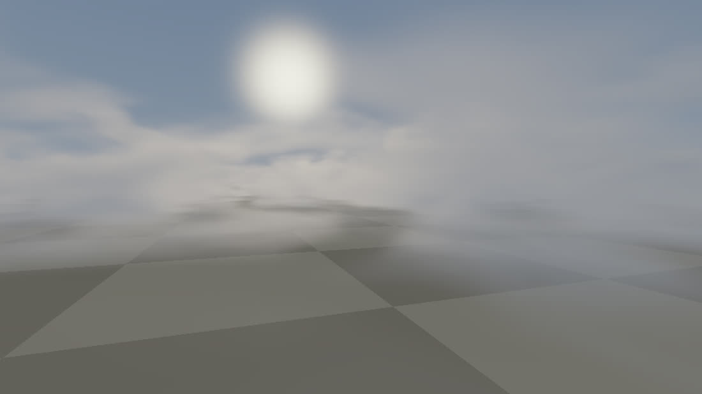
fogcheck marschiert volfog.frag in voller Auflösung gegen einen synthetischen Tiefenpuffer — kein Halbbild, kein Upsample, kein Post. Was herauskommt, ist das Feld statt des Filters.fogcheck marches volfog.frag at full resolution against a synthetic depth buffer — no half-res, no upsample, no post. What comes out is the field rather than the filter.Eine Prüfung, die man nie hat scheitern sehen, ist eine ungeprüfte Prüfung.
A check that has never been seen to fail is a check that has not been tested.
Eine Regressionsprüfung für den Pathtracer bestand gegen den Build, der den Fehler noch hatte: ihr synthetisches Panorama war kleiner als das Raster des Samplers, es blieb also keine Abweichung mehr zu fangen. Sie hätte beinahe eine falsche Diagnose abgesegnet. Seitdem gilt: jede neue Prüfung erst einmal gegen den kaputten Zustand laufen lassen.
A regression test written for the path tracer passed against the build that still had the bug: its synthetic panorama was smaller than the sampler's grid, so there was no mismatch left to catch. It very nearly signed off a wrong diagnosis. The habit it earned: run a new check once against the broken state before trusting it.
Ausliefern
Shipping
Ein Ordner, der läuft — ohne den Editor darin.
A folder that runs — with the editor no longer in it.
Export Game schreibt den editorfreien player.exe unter dem Namen des Spiels, ein Boot-game.json, die Lizenzhinweise und — sofern nicht abgeschaltet — ein verschlüsseltes game.fpak statt browsbarer Ordner. Start as steht direkt neben der Startszene, weil beides eine Entscheidung ist: welches Level öffnet, und was der Spieler ist, wenn es öffnet — zu Fuß, am Steuer, im Gleiter, oder zusehend durch die Main Camera oder die Multishot-Kamera, die sich ihre Schnitte selbst macht. Die letzten beiden sind, wie ein Spiel auf einem Attract-Screen öffnet statt auf einem Spieler.
Export Game writes the editor-free player.exe under the game's own name, a boot game.json, the licence notices and — unless switched off — one encrypted game.fpak instead of browsable folders. Start as sits right next to the start scene, because the two are one decision: which level opens, and what the player is when it does — on foot, behind the wheel, flying the glider, or watching, through the Main Camera or through the multishot camera that cuts its own shots. The last two are how a game opens on an attract screen rather than on a player.
- Icon
Ein quadratisches PNG. Der Export skaliert es auf jede Größe, die Windows verlangt, baut das Icon im Speicher und schreibt es mit
UpdateResourcedirekt in die Ressourcen des kopierten Exe. Kein.ico, kein Rebuild der Engine — das Exe wurde lange vorher gelinkt, und genau deshalb geht es so. A square PNG. The export scales it to every size Windows asks for, builds the icon in memory and writes it straight into the copied exe's resources withUpdateResource. No.icoto make and no rebuild of the engine — the exe being branded was linked long before, which is the whole reason it is done this way. - Installer
Erzeugt ein Inno-Setup-Skript für den fertigen Ordner und kompiliert es zu einer einzelnen
<name>-setup.exe, mit demselben Icon, Startmenü-Eintrag und Uninstaller. Installiert pro Benutzer — für ein Spiel fragt niemand nach Adminrechten. Generates an Inno Setup script for the finished folder and compiles it into a single<name>-setup.exe, with the same icon, a Start-menu entry and an uninstaller. It installs per-user — nobody is asked for admin rights to play a game. - Beide dürfen den Export nicht scheitern lassenNeither may fail an export Ein unmarkiertes Exe in einem funktionierenden Ordner schlägt einen weggeworfenen Zehn-Minuten-Export wegen eines Bildes. An unbranded exe in a working folder beats throwing away a ten-minute export over a picture.
- Lizenzen, die nicht abdriften könnenLicences that cannot drift
Jede Fremdkomponente ist permissiv (MIT, BSD-3, zlib, Boost, MIT-0) — ein damit gebautes Spiel darf closed source sein und verkauft werden. Die Hinweisdatei wird generiert, nie getippt: Versionen kommen aus
Dependencies.cmake, Lizenztexte wörtlich aus den geholten Quellen. Every third-party component is permissive (MIT, BSD-3, zlib, Boost, MIT-0) — a game built with it can be closed-source and sold. The notice file is generated, never typed: versions are read back out ofDependencies.cmakeand every licence text is copied verbatim from the fetched sources.
Stack
Stack
Vierzehn Bibliotheken. Keine davon liegt im Repo.
Fourteen libraries. None of them vendored.
Alles wird per FetchContent aus cmake/Dependencies.cmake geholt — derselben Datei, aus der die Lizenzhinweise generiert werden, damit die Liste und das, was tatsächlich gelinkt wird, nicht lange auseinanderdriften können. Der erste Build braucht deshalb Netz, und Python 3 mit Jinja2, weil GLAD damit den Loader generiert.
Everything is pulled in by FetchContent from cmake/Dependencies.cmake — the same file the licence notices are generated from, so the list and what actually links cannot drift apart for long. The first build therefore needs a network connection, and Python 3 with Jinja2, which is what GLAD generates the loader with.
| Fenster / EingabeWindow / input | GLFW |
| GL-LoaderGL loader | GLAD2 — gl 3.3 core, beim Konfigurieren generiert |
| MathematikMath | GLM |
| Editor-UIEditor UI | Dear ImGui (docking) + ImGuizmo + ImGuiColorTextEdit |
| BilderImages | stb_image, tinyexr — EXR-Normal-Maps und HDRIs |
| ModelleModels | assimp, cgltf |
| Audio | miniaudio |
| PhysikPhysics | Jolt |
| Scripting | Lua |
| Szenen / SettingsScenes / settings | nlohmann/json |